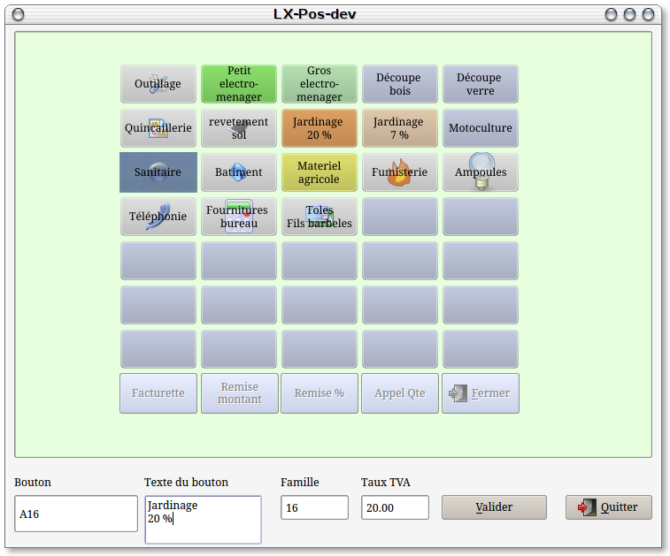

~ Laurux.Pos ~

~ Laurux.Pos ~ |
|
|
|
Gestion des touches paramétrables.

La caisse utilisée est une caisse tactile autonome reliée à un système de gestion. On peut donc utiliser les produits créés dans la table des articles mais on va pouvoir utiliser des touches prédéfinies pour facturer des produits inexistants dans la base. Pour cela il faudra au préalable créer ces produits génériques dans la base.
Pour accéder au programme de paramétrage des touches on fait "F12" sur le menu de Laurux.pos
On dispose de 35*35 touches. Les dernières étant utilisées pour des besoins spécifiques tel que la fermeture de la fenêtre elles ne pourront pas être paramétrèes.
Pour paramétrer une touche, on la sélectionne puis
on attribue un texte et le produit correspondant.
NB : Le texte du bouton sera le texte qui s'imprimera sur le ticket.
Lors de la sélection d'une touche
le nom du bouton s'inscrit automatiquement et ne doit pas être modifié.
On peut attribuer des sous-familles de touches à une touche. Il suffit de cocher "Sous-famille" puis d'aller dans les sous-familles pour continuer le paramétrage des sous-familles.
Valider votre saisie grâce
au bouton "Valider"
NB : pour supprimer un
paramétrage, on sélectionne un bouton, on se positionne sur la zone "Bouton" puis on fait "Suppr"."
Il est possible d'affecter une couleur et une image à chaque bouton. Pour cela, après la création du bouton, il faudra double-cliquer pour faire apparaître la fenêtre de paramétrage.
----------------------------------------------------------------------------------------------------------------------